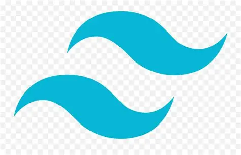

Mes compétences
Frontend
- ReactJs
 Java [JSP]
Java [JSP] JavaScript
JavaScript HTML
HTML CSS
CSS Bootstrap
Bootstrap-  Tailwind.css
Backend
- Php [Base | Symfony]
 Python [Django]
Python [Django]- Java [Hibernate]
- SGBD [MySQL | Postgresql]
Autres
- Méthode de conception UML
- Méthode Merise
 Git [Github]
Git [Github]- Pack office [Word | PowerPoint | Excel]
 Photoshop
Photoshop- Figma